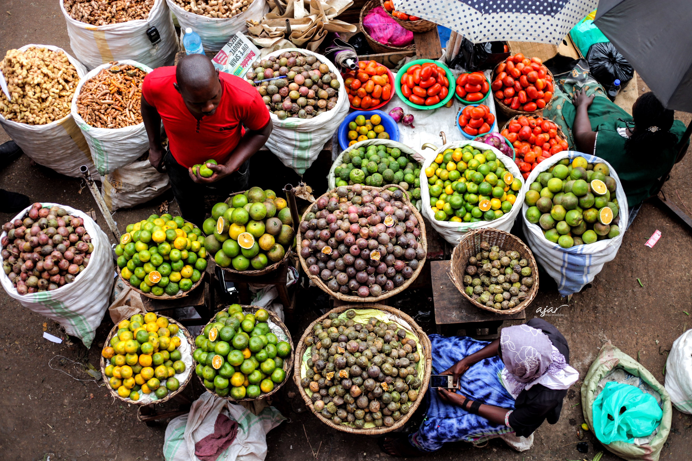
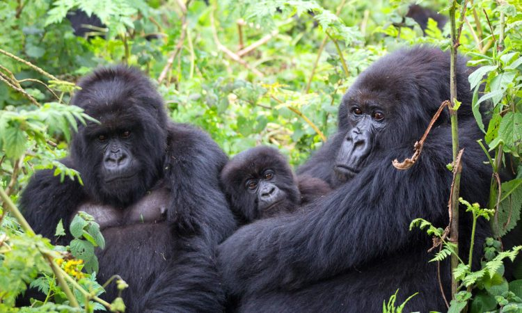
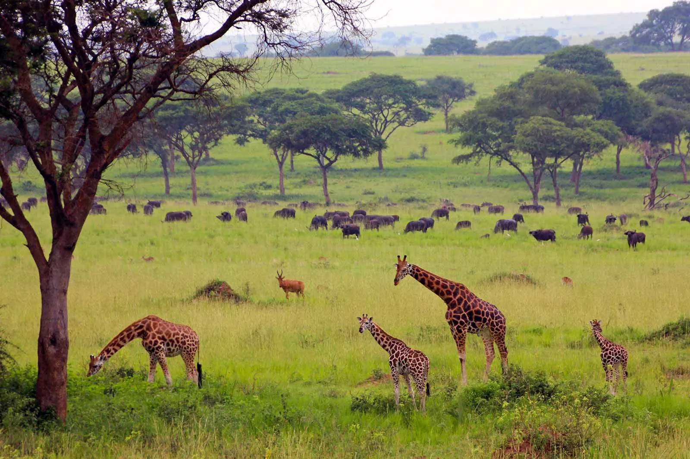

<!DOCTYPE html>
<html lang="en">
<head>
    <meta charset="UTF-8">
    <meta name="viewport" content="width=device-width, initial-scale=1.0">
    <title>Haleema Malik - Travel Advice for Uganda</title>
    <link rel="stylesheet" href="styles.css">
    <link rel="stylesheet" href="scripts/lightbox.css"> <!-- Lightbox CSS -->
    <script src="scripts/jquery.min.js"></script>
    <script src="scripts/lightbox.min.js"></script>
     <script src="travelrelatedfunctions.js"></script> <!-- Include the travelrelatedfunctions.js file -->
    
</head>

</body>
</html>

</head>
<body>
    <header>
        <h1>Travel Advice</h1>
    </header>
    
    <main id="main-content">
        <article id="uganda-travel">
            <h2>Exploring Uganda: A Journey of Discovery</h2>
            
            <h4>A Cultural Tapestry</h4>
             
            <p> My journey to Uganda was a vibrant mosaic of experiences, each one more enriching than the last. As soon as I arrived in Kampala, the bustling capital city, I was greeted by the warm smiles and welcoming nature of the Ugandan people. The city's lively markets, such as Owino Market, are a sensory overload of colors, sounds, and scents. Here, I haggled for handmade crafts, sampled local delicacies, and immersed myself in the daily life of the locals.</p>

            <h4>Mountain Gorillas in Bwindi</h4>
            
            <p> One of the highlights of my trip was visiting the Bwindi Impenetrable Forest, home to nearly half of the world's mountain gorillas. Trekking through the dense jungle, guided by experienced trackers, was an exhilarating adventure. The moment I came face-to-face with a family of gorillas is etched in my memory forever. Their gentle eyes and human-like expressions left me in awe of these magnificent creatures and the efforts to conserve their habitat. </p>

            <h4>Murchison Falls</h4>
            
            <p>Another unforgettable experience was my visit to Murchison Falls National Park. Cruising along the Nile River, I witnessed the raw power of the falls as they thundered through a narrow gorge. The park's diverse wildlife, including elephants, lions, and hippos, provided countless opportunities for breathtaking photos and thrilling safari adventures.</p>

            <h4>Community Connections</h4>
            <p>In addition to exploring the natural beauty of Uganda, I had the privilege of engaging with local communities. I spent time in rural villages, where I learned about traditional Ugandan crafts, music, and dance. Participating in a community-led development project gave me a deeper understanding of the challenges faced by these communities and the innovative solutions they are implementing to improve their livelihoods.</p>
        </article>

        <section id="personal-growth">
            <h3>Personal Growth Insights</h3>
            <ul>
                <li><strong>Embrace Spontaneity:</strong> Uganda taught me the beauty of embracing the unexpected. Whether it's a sudden rainstorm during a hike or an impromptu dance session with locals, being open to spontaneous experiences can lead to unforgettable memories.</li>
                <li><strong>Appreciate Diversity:</strong> The rich cultural diversity in Uganda is a reminder of the value of embracing different perspectives and traditions. Engaging with people from various backgrounds expanded my worldview and deepened my appreciation for the tapestry of human culture.</li>
                <li><strong>Environmental Stewardship:</strong> Witnessing the efforts to conserve Uganda's natural wonders reinforced the importance of environmental stewardship. Small actions, such as reducing plastic use and supporting eco-friendly initiatives, can contribute to the preservation of our planet's precious resources.</li>
                <li><strong>Community and Connection:</strong> The strong sense of community in Uganda highlighted the importance of connection and mutual support. Building meaningful relationships and contributing to the well-being of those around us can create a positive impact on both individual and collective levels.</li>
            </ul>
            <p>Uganda is a land of breathtaking beauty, rich culture, and profound experiences. My journey through this remarkable country was a transformative adventure that left me with cherished memories and valuable lessons. Whether you're seeking thrilling wildlife encounters, cultural immersion, or personal growth, Uganda has something to offer every traveler.</p>
        </section>

        <!-- Image Gallery Section -->
        <section id="image-gallery">
            <h2> Gallery </h2>
            <div class="gallery">
                <a href="bwindi-gorillas.jpg" data-lightbox="gallery"></a>
                <a href="murchison-falls..jpg" data-lightbox="gallery"></a>
                <a href="kampala-market..jpg" data-lightbox="gallery"></a>
            </div>
        </section>

        <section id="travel-content-section">
            <div id="travel-content"></div>
            <button onclick="filterTravelTips()">Filter Travel Tips</button>
        </section>

  
    
    

    <footer>
        <p>&copy; 2024 Haleema Malik</p>
    </footer>

    <script src="scripts/jquery.min.js"></script>
    <script src="scripts/lightbox.min.js"></script> <!-- Lightbox JS -->
</body>
</html>
